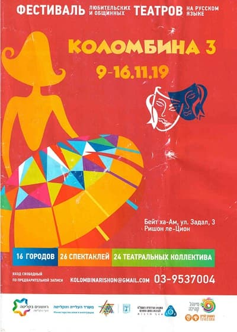

«КОЛОМБИНА»

Аншлаг! Аншлаг! Аншлаг!Аншлаг! УРАААА!!!
« КОЛОМБИНА» - фестиваль любительских и общинных театров на русском языке Русскоязычные любительские театры всей страны ( Израиль) получили возможность показать зрителям свое искусство впервые в 1917 году в г. Ришон ле - Цион на фестивале организованном интузиастами театрального искусства Рафаэллой Дели и Ольгой Примиргер В нем приняли участие 9 театров-студий и общинных театров со всей страны. Фестиваль состоялся в рамках мероприятий месяца алии... С тех пор город Ришон ле-Цион становится театральной столицей для любительских театров и их почитателей. Фестиваль « Коломбина» стал хорошей традицией: прошли встречи и выступления в 2018г., 2019г.,2022г. К сожалению, дважды его приходилось отменять: в 2022 и 2023гг.Это были трудные годы короновируса и войны... « Театральная семья Коломбины» за годы, прошедшие от ее создания (1917г.) очень выросла, стала более профессиональной, разносторонней и разноплановой. Появились детские и юношеские коллективы.Моно-актеры. На сцене знаменитого исторического здания Бейт а-Ам ( Народный Дом) выступило множество театров со всей страны: «Штрудель.ком»(Ришон), «Маагаль» (Петах-Тиква), «MIX-ART» (НЕШЕР), «МЕНОРА» ( АШКЕЛОН) и др. Зрители посмотрели за эти годы до сотни театральных постановок как традиционных, так и с неожиданной трактовкой: «Тряпичная кукла»(студия «Верю»), «Вирус Любовь) (Студия «Т»), «Ночное кабаре» («Домовой»), «Лучше вдвоем» («МоноАрт») и др. Любительские театры — уникальное культурное явление для Израиля. Для многих репатриантов именно театр стал средством самовыражения, терапией, социальной средой, в которой вхождение в новую страну проходит легче и мягче. Создатели и руководители этих коллективов - талантливые мастера с большим сценическим опытом, талантом и огромной любовью к своему делу и , к своему зрителю. Их не останавливают ни болезни, ни войны. До новых встреч ,друзья, на « Коломбине».
Театр Драмы и Комедии « МЕНОРА» на фестивале русскоязычных театров « КОЛОМБИНА -3 « 9 - 16.11.19 Коллектив театра « Менора « под руководством режиссера Ирины Лев представил свою новую работу - спектакль по пьесе В. Красногорова « Легкое знакомство «. Тема житейская, понятная, трогательная. Мужчина и Женщина знакомятся поздно вечером в гостиничном ресторане,причем инициатива исходит от Женщины... И...зрители становятся участниками истории их взаимоотношений. Хоть однажды в жизни каждый переживал те же ситуации, события, чувства. Любил и ненавидел. Уходил и ...возвращался. Плакал и смеялся. Надеялся и... терял надежду. Словесный поединок персонажей отражает их взаимное притяжение и отталкивание, их одиночество и стремление преодолеть его, желание и боязнь Любви. Музыкальная и световая партитуры дополняют каждый шаг героев и с каждым тактом музыки ( композитор В. Попов ) две одинокие души сближаются, чтобы в финале слиться в одно любящее сердце ( оригинальная находка режиссера). С силой любви ничего не сравнится и ничто ее не одолеет! Таков финал этой удивительной истории...
ВСЕИЗРАИЛЬСКИЙ театральный фестиваль "Коломбина" прошел в городе Ришон Ле-Ционе с 14 по 17 декабря. Для участия в нем были приглашены 16 лучших израильских коллективов, работающих на русском языке.
Наш театр выступил со своей последней работой - спектаклем " Шерше Ля Фам или ребрышки Адама", представив
скетч "Две женщины" В.Красногорова.
Автор сценария и режиссер: Ирина Лев.
Композиторы: Илья Кузинец и Александр Хейфец.
Роли исполняли: Надежда Аношина и Елена Михайлова.
Песни звучали в исполнении Софии Маковкиной, Алесандра Хейфец, Василисы Семеновой.
Коллектив театра горд реакцией зрителей, громом оваций, а, главное тем, ЧТО ПРЕДСТАВЛЯЛ СВОЙ РОДНОЙ ГОРОД АШКЕЛОН.
Театр Драмы и Комедии « МЕНОРА» на фестивале русскоязычных театров « КОЛОМБИНА - 4 « 14 - 17.12.22 За два прошедших сложных года труппа театра « МЕНОРА», работая в интернет- пространстве ( ЗУМ, Вотсап, Скайп ) и лишь в минуты передышки от короновируса, на сцене своего родного театра ,создала свой необычный проект: два спектакля под « говорящим» названием « РАНДЕВУ С ТЕАТРОМ «. Это свидание с искусством « соткано « из семи пьес драматургов из разных стран , обьединенных единой и всем понятной темой. Имя которой - ЛЮБОВЬ. На фестивале театр выступил со своим премьерный спектаклем «Рандеву с театром» показав зрителям свое виденье пьесы В. Красногорова « ДВЕ ЖЕНЩИНЫ». Режиссер- постановщик, автор текста стихов и песни -ИРИНА ЛЕВ. Композитор - Илья Кузинец. «Две женщины» - это грустная комедия повествующая о судьбах и бедах двух очень разных женщин. В стенах больницы встречаются Жена и Любовница ...Они никогда не видели друг друга, а потому, как говорится в известной поговорке о двух пассажирах в поезде, откровенничают друг с другом, делясь своими трудностями и своей болью... Их очень многое обьединяет и они в какую-то минуту чувствуют друг к другу взаимную симпатию. И...вдруг узнают, что они Соперницы в любви... Спектакль полон грустных и смешных ситуаций, полон оптимизма и надежды, музыки и стихов. Две Судьбы — два Мира!
Театр Драмы и Комедии «МЕНОРА» на фестивале русскоязычных театров « КОЛОМБИНА - 5 « 2023 На фестиваль русскоязычных театров « КОЛОМБИНА - 5», театр «МЕНОРА» представил спектакль по пьесе знаменитого голивудского драматурга Нила Саймона « ХОЧУ СНИМАТЬСЯ В КИНО». Режиссер - постановщик ИРИНА ЛЕВ. Эпиграфом к спектаклю стали слова великого В. Гете : « Кто верить сам в себя умеет, тот и других доверьем овладеет». «Хочу сниматься в кино» легкая, трогательная история о мечте и стремлении к ее исполнению!.. О Любви и ее многогранности! Об отношениях между людьми! О встречах и разлуках! И...о еще об очень-очень многом... Подросшая дочь приезжает в Голливуд к отцу(известному сценаристу!) , которого никогда не видела, чтобы осуществить свою мечту сниматься в кино. Но, это ли причина ее приезда?! Хотите узнать? Смотрите спектакль. Художник — ДИМА МАЛКОВИЧ.